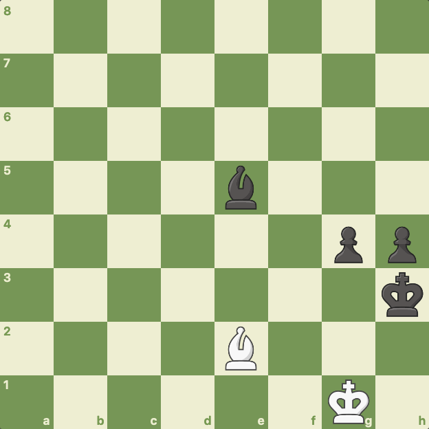

Końcówki
Gra w końcówce w szachach wymaga precyzji, cierpliwości i dokładnego planowania. Końcówka to faza gry, w której na planszy pozostało niewiele materiału, często tylko kilka figur i pionów. Oto kilka wskazówek, jak skutecznie grać końcówki w szachach:
Aktywizacja króla: W końcówce król staje się silniejszy, ponieważ nie ma już tak wielu zagrożeń ze strony przeciwnika. Staraj się aktywizować swojego króla, przynosząc go bliżej centrum i wykorzystując go do aktywnego udziału w grze.
Centrum planszy: Kontrola nad centrum jest nadal istotna w końcówce. Staraj się utrzymać kontrolę nad centralnymi polami planszy, co pozwoli Ci na lepsze rozmieszczenie swoich figur i pionów.
Kreowanie przewagi materialnej: W końcówce nawet jedna dodatkowa figura może decydować o wyniku gry. Szukaj możliwości zdobycia przewagi materialnej poprzez wymiany figur lub zdobycie pionów.
Zasada aktywności: Staraj się utrzymać swoje figury i piony w aktywnych pozycjach. Aktywne figury mają większy zasięg i mogą bardziej efektywnie wspierać Twoje cele.
Umiejętność planowania: Opracuj plan działania na podstawie analizy pozycji i możliwych scenariuszy. Czy to promocja pionu, atak na króla przeciwnika, czy też stworzenie silnej pozycji na planszy.
Zdolność do obliczeń: W końcówce obliczenia są często kluczowe. Staraj się przewidywać możliwe warianty i konsekwencje ruchów, aby uniknąć pułapek i popełniania błędów.
Technika wymiany: W końcówce często występują wymiany figur. Bądź świadomy, jakie wymiany są korzystne dla Ciebie i staraj się unikać tych, które przynoszą przeciwnikowi przewagę.
Wykorzystaj zasady i motywy końcówkowe: Istnieją specyficzne zasady i motywy końcówkowe, takie jak aktywizacja króla, tworzenie pionów przemieszczających się w parze, czy też wykorzystanie techniki Luceny. Zapoznaj się z nimi i próbuj je stosować w praktyce.
Ćwiczenie końcówek: Regularne rozwiązywanie zadań końcówkowych i praktyka gier końcowych pomoże Ci doskonalić swoje umiejętności w tej fazie gry.
Gra w końcówce w szachach jest często decydująca dla wyniku partii. Dobrze opracowana strategia i umiejętność techniczna mogą przynieść Ci zwycięstwo nawet w trudnych sytuacjach.
